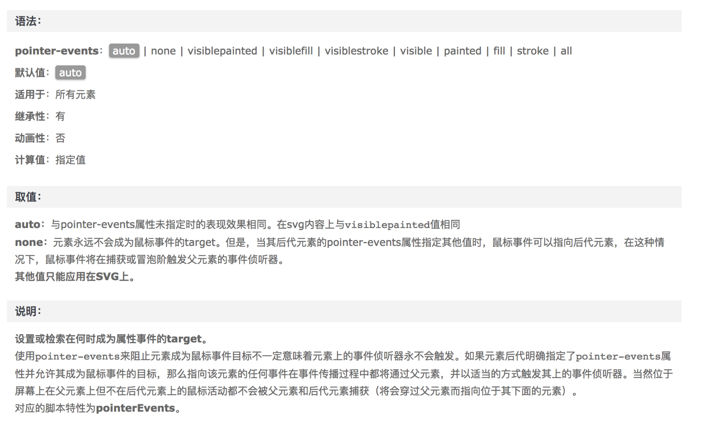

css禁止鼠标事件
最近在做一些按钮控制类的需求，从jser思维方式出发，老是根据样式或者属性对按钮触发方法做一些判断然后return掉。
后来在重构兄弟的启发下，发现原来有更简单的处理方式，通过CSS的pointer-events可以简单的控制区域能不能响应鼠标事件。通过这个事件可以发现有很多原来看似复杂的js控制，都可以转变为对css样式类的控制。
现在看起来，很多事情都可以换种方法，比如之前碰到的序号问题，现在碰到的按钮控制问题。 复杂js的解决方案可以用简单的css解决方案来代替，不失为一种优美的思路。
ps：付上 pointer-events 的说明，备查
